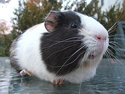

	<h2> Hobbies </h2>

I have <strong>many</strong> hobbies yes I do

<table> <table border="1">
  <tr>
    <td>Hobbies:</td>
    <td></td>
  </tr>

	<tr>
    <td>drawing</td>
  </tr>

	<tr>
    <td>playing video games</td>
    </tr>

	<tr>
    <td>programmings</td>
    </tr>

	<tr>
    <td>reading</td>
    </tr>

	<tr>
    <td>writing</td>
    </tr>

	<tr>
    <td>swimming</td></td>
    </tr>
</table>

<br> <a href="https://store.steampowered.com/app/1627720/Lies_of_P/">This is the current video game that I am playing. It is called Lies of P.</a>
	
<p>
</p>


<br>Guinea pigs say: "<em>wheek wheek wheeeeek!</em>"

<br> I used to have two guinea pigs, their names were:
<ol>
  <li>Red: was very energetic and always annoyed Blue.</li>
  <li>Blue: was a bit of a bully to Red. Was much older than Red and was the calm one in the duo.</li>
</ol>
<br> They loved bell peppers

<br><a href="https://katieryb.github.io">Click here to go back the main page</a>


